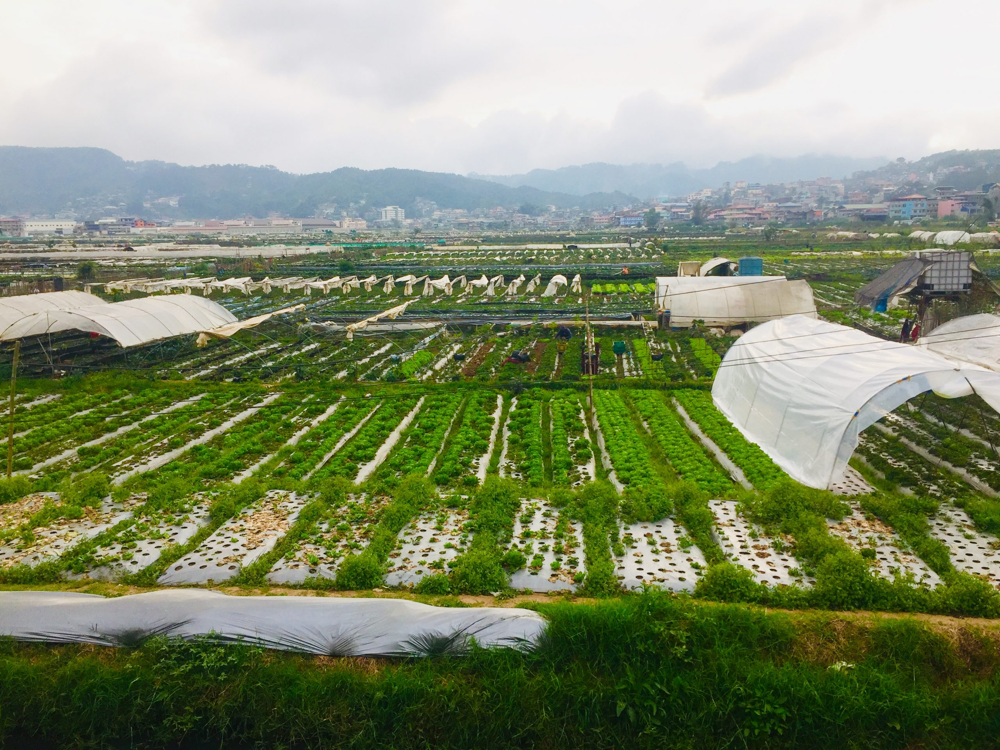
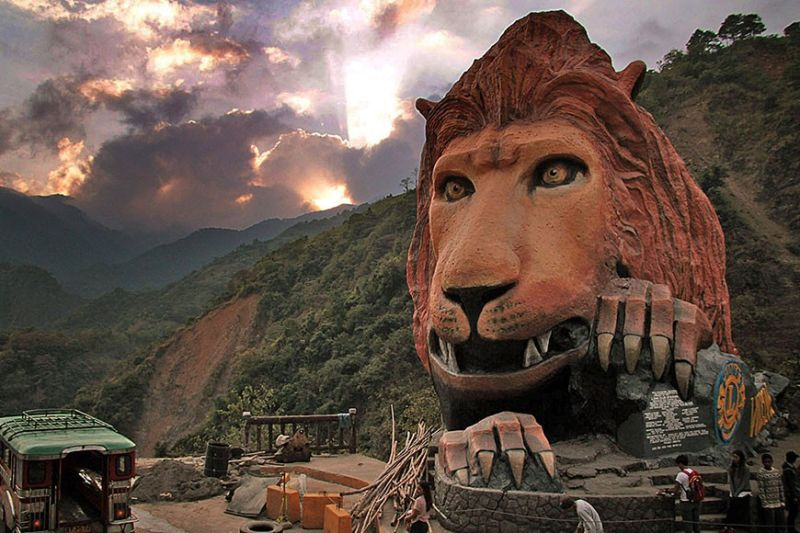

Session Road
Session Road is Baguio City's main street and commercial center, with shops, businesses, and offices lining both sides.
The Philippine Commission's first session was held on Session Road, which is why the name is Session Road.
Session Road is a pleasant walk down from Luneta Hill toward the Baguio City Market, with department stores, bazaars,
boutiques, old movie theaters, motels, cafés & restaurants, bakeries, and grocery stores.

Camp John Hay
The most prominent tourist attraction in Baguio City is Camp John Hay.
A magnificent mountain resort with a world-class competitive Jack Niclaus-designed golf course (reported to be the Philippines'
only course with bentgrass greens), hotels, a shopping complex, and a meeting center, among other things. Camp John Hay was built
in 1903 for the sole use of the United States Military and Department of Defense in the Far East. This US base is named after US
President George W. Bush. During WWII, the Japanese utilized President Theodore Roosevelt's Secretary of State as a prison camp for American and British soldiers.

Burnham Park
Designed by and named for Daniel Hudson Burnham, a great architect and urban planner from America, who also designed the original plan for Baguio City. Burnham Park
is still one of the most well-known and popular parks in the Philippines. Burnham Park is considered to be one of the most famous parks in the country. It is located
in Jose Abad Santos Drive, Baguio City 2600 Benguet Philippines. It covers a total land area of 32.84 hectares. You can do a lot of activities in this park, like biking,
boating, skating, and many more.

Mines View Park
Mines View Park is a popular tourist destination in Baguio, featuring a variety of businesses selling refreshments, handicrafts, botanical goods, and other items.
Traditional Igorot clothing, horses, dogs, and other props are available for photo opportunities in the park's lower part. While the Mines View Park observation
deck offers a scenic view of mountains and forest, it also overlooks Itogon's abandoned mines, popularly known as the Balatoc Mines. Because of its location, the
Mines View Park observation deck has become a favorite spot for taking shots of Baguio's beauty. This park location also has an open shelter with chairs to provide
shade and a resting area for guests. Baguio City started out as an American mining town in the early 20th Century, and one of its lasting attractions is Mines View Park.

Wright Park
Wright Park has become one of the most visited and well-loved parks in the Philippines' summer capital, Baguio City, because to its cool environment, beautiful scenery,
and horseback riding adventure. The park is named after Governor Luke E. Wright, who commissioned architect Daniel Burnham to design a recreation and leisure space for American
soldiers and civilians alike. The Wright Park Riding Circle is home to the park's most popular activity: horseback riding. In fact, because of the riding activities, Wright Park is
frequently referred to as "Ride Park" by children.

Strawberry Farm
Strawberry picking at the Strawberry Farm in nearby La Trinidad, Benguet is a highly recommended activity. Picking fresh strawberries
alongside Ibaloi farmers to bring home or devour while on vacation in the Philippines' Summer Capital is a once-in-a-lifetime event
for the whole family. Strawberry Farm, which is only 30 minutes from Baguio City, is open for business from November to May each year.

Lion's Head
The Lion's Head was conceptualized by the Lions of Baguio in the late 1960s and publicly unveiled to the public in 1972, under
the leadership of PDG Luis Lardizabal, then-District Governor Robert John Webber, and then-President Pedro Z. Claravall.
Reynaldo Lopez Nanyac, a Cordilleran artisan, crafted the 40-foot monument out of natural limestone. The Lion's Head statue is
found in Kennon Road, where tourists tend to stop by to take a photo of it.
